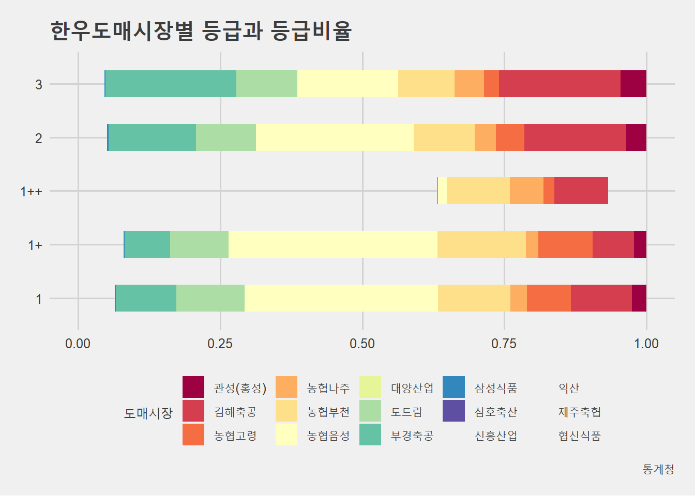

<section class="bg-dark" id="about2">
    <div class="container">
        <div class="row">
            <div class="col-lg-8 col-lg-offset-2 text-center">
                <h2 class="section-heading">소 1조<br><br>한우 육우 생산단가와 수익성 비교</h2>
                <hr class="light">
                <p class="text-faded">한우와 육우 생산단가와 수익성을 비교해 보았다.</p>
                <a href="../output/소1조/소1조.html" class="btn btn-primary btn-xl page-scroll">결과물 전체보기</a>
                <a href="https://github.com/YoungjunNa/livestock2019/tree/master/output/%EC%86%8C1%EC%A1%B0" class="btn btn-primary btn-xl page-scroll">코드/데이터</a>
                <br><br>
                <p></p>                

                <!-- <a href="#" class="btn btn-default btn-xl">Get Started!</a> -->
            </div>
        </div>
    </div>
</section>
